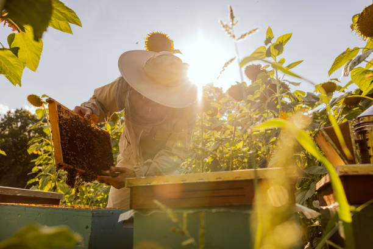

Te contamos un poco de nosotros
En Amancay, nuestra pasión por la miel es lo que nos impulsa a crear productos únicos y de la más alta calidad. Somos una empresa familiar que ha transmitido su amor por la apicultura de generación en generación. Nuestra historia se remonta a 1950, cuando mi abuelo comenzó a cuidar las abejas en Olavarría. Desde entonces, hemos mantenido viva esa tradición, combinando métodos artesanales con las últimas innovaciones para garantizar la pureza y el sabor excepcional de nuestra miel.
¿Por qué elegirnos?

Calidad superior
Nuestra miel es el resultado de un proceso cuidadoso que va desde la cría de las abejas hasta la cosecha y envasado de la miel.
Sabor único
Cada tipo de miel tiene un sabor especial que refleja la flora de la región donde se encuentran nuestros colmenares.

Compromiso ambiental
Practicamos una apicultura sostenible que protege a las abejas y su entorno.
Tradición familiar
Nuestra experiencia y pasión por la miel se transmiten de padres a hijos, garantizando la calidad de nuestros productos.